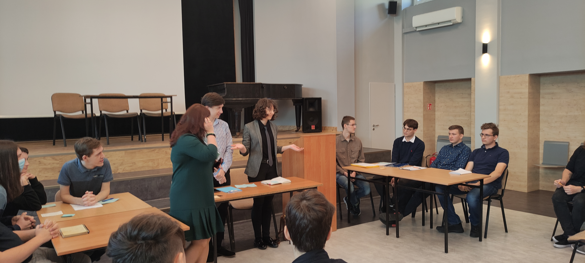
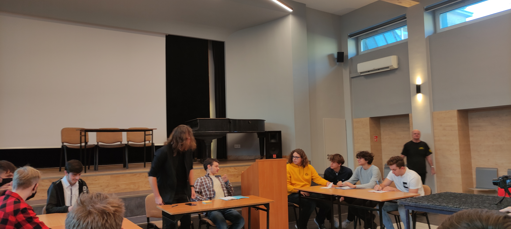
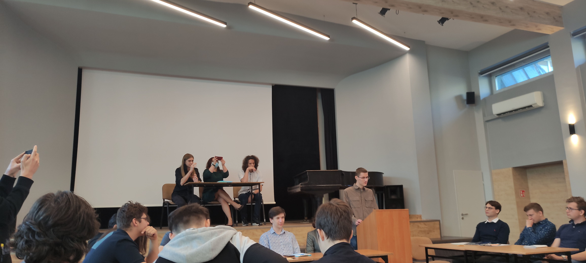
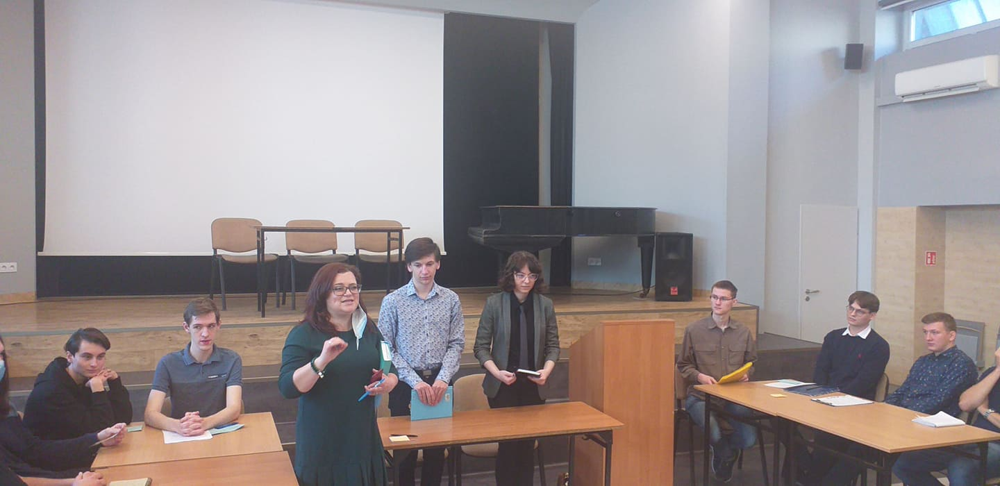

Sala pełna ludzi i argumentów

Dnia 28 października 2021r. W Zespole Szkół
Techniczno-Informatycznych, odbyły się dwie debaty, przygotowane przez
klase 3I. Spotkanie odbyło się na auli, która wypełniona była tłumem
gości, reporterów, oraz samych debatujących. Gdy widownia zajęła swoje
miejsca Opozycja i Propozycja pierwszej debaty zakończyła ostatnie
przygotowania. Zasiedli więc na swoich miejscach, jak w dwóch
narożnikach ringu i rozpoczęła walkę, nie na pięści, tylko na słowa i
argumenty.
Ciężką pracą ludzie się bogacą

Po krótkim wprowadzeniu odbyła się pierwsza debata, której obiektem
była teza: “Ciężką pracą, ludzie się bogacą”. Przedstawiciele
propozycji rozpoczęli tę debatę, zamieniając się na przemian z
dyskutantami opozycji. Nawiązania do Biblii i Jana Pawła II otwarły
debatę ze strony propozycji. Ich kolejnymi argumentami były
stwierdzenia, że praca przynosi dobre rezultaty, jest motorem
napędowym dla samorozwoju. Opozycja nie pozostawała jednak dłużna
swoim przeciwnikom. Przytaczali oni takie argumenty jak nierówność
płac, niewspółmierność wkładanego wysiłku do otrzymanych rezultatów
oraz to, że praca zajmuje sporo czasu, który moglibyśmy wykorzystać na
inne rzeczy. Kiedy wszyscy uczestnicy debaty zakończyli swoją
wypowiedź, odbyło się głosowanie przeprowadzone wśród publiczności.
Debatę tą zwyciężyła propozycja, stosunkiem głosów 26 do 9, dowodząc,
że ciężką pracą ludzie się bogacą.
Świat potrzebuje idealistów

Kiedy pierwsza grupa zakończyła debatę na scenie pojawiły się nowe
twarze. Grupa ta również podzielona była na dwie grupy i w taki sam
sposób jak poprzednia debatowała nad racją stwierdzenia: “Świat
potrzebuje idealistów”. Tej debacie, przyglądało się również
trzyosobowe grono ekspertów. Argumenty propozycji wydawały się
sensowne. Mówili oni, że idealiści zapoczątkowują idee, mają
największe skłonności do dbania o innych oraz dają nadzieją osobą
które jej potrzebują. Opozycja jednak nie zostawiła suchej nitki na
idei idealizmu. Oskarżali oni idealistów o “Bujanie w chmurach”.
Twierdzili, że to realiści wkładają najwięcej trudu w budowaniu
dobrego społeczeństwa. Mówili oni, że twarde stąpanie po ziemi jest
najlepszym sposobem, aby osiągnąć sukces, a wizjonerzy tylko
przeszkadzają w dążeniu do idealnego społeczeństwa. Tak jak poprzednia
debata, ta również została zakończona demokratycznym głosowaniem,
którego zwycięzcami została opozycja, zdobywając 24 głosy. Kiedy to
propozycji udało się nakłonić 20 osób na oddanie głosu w ich sprawie.
Podsumowanie

Podsumowując obie debaty można dojść do jasnych racji, które ze stron
głosowania miały racje, należy pamiętać, iż demokracja, chociaż jest
najlepszym system rządów znanym dzisiejszym czasom, nie jest idealna.
Nie zawsze wynik głosowania musi oznaczać słuszność idei. Dobrze jest
również zwrócić uwagę na to, że tezy będące poddawane debacie, są
bardzo otwartymi na interpretacje stwierdzeniami. Bo jaka jest tak
naprawdę definicja pracy? Gdzie jest granica pomiędzy realista a
idealistą? A gdzie są odcienie szarości, o których tak często
zapominamy? Dlatego każdy z nas powinien sam odpowiedzieć na pytania
omawiane podczas tych debat, jedynie sugerując się przytoczonymi przez
debatujących argumentami.